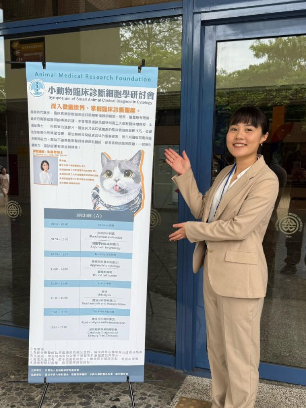

Speaking
Dr. Chu speaks to veterinary colleges, specialty colleges, conferences, professional organizations and industry audiences on artificial intelligence in veterinary medicine — from practical AI literacy to diagnostic model validation.

Keynote Topics
Artificial Intelligence in Veterinary Medicine
Veterinary AI Literacy and Responsible Adoption
Generative AI in Veterinary Education
AI-Assisted Veterinary Diagnostics
Digital Cytology and Computational Pathology
Large Language Models for Veterinary Research
Preparing the Next Generation of AI-Savvy Veterinarians
The Future of Veterinary Clinical Pathology
Conference Keynote
Keynote · Nov 2024
ChatGPT in Veterinary Medicine
American College of Veterinary Radiology Scientific Conference · Norfolk, VA
Invited Conference Presentations
National — Specialty Colleges & Associations
AVMA Convention · 2026
Less pAIn, More gAIn: A Starter Guide to AI Literacy for Veterinary Professionals
American Veterinary Medical Association · Anaheim, CA
ACVP Workshop · Oct 2025
Lymphoma Classification in Cytological Images
Pathology Informatics Workshop: Automated Image Analysis Using Machine Learning, ACVP Annual Meeting · New Orleans, LA
ACVP Webinar · Jul 2025
AI in Veterinary Pathology: Navigating Innovation, Pitfalls, and Best Practices
ACVP Lifelong Learning Webinar · Remote
ACVIM Virtual Day · Jun 2025
Panel: The Rise of Artificial Intelligence — Benefits and Threats to Referral Veterinary Medicine
American College of Veterinary Internal Medicine · Remote
Purina Institute · May 2025
The Impact of AI on Veterinary Diagnostics and Consulting
Purina Institute Global Summit · St. Louis, MO
VMX · Jan 2025
AI and Medicine: Where Are We Now? Where Are We Heading? Should We Embrace or Be Afraid?
VMX Veterinary Conference (IDEXX sponsored) · Orlando, FL
VMX · Jan 2025
Blood Morphology Matters: Common Clinically Significant Findings You Might Miss If You Don’t Smear
VMX Veterinary Conference (IDEXX sponsored) · Orlando, FL
VMX · Jan 2025
The ‘Art’ of Interpreting Blood Morphology
VMX Veterinary Conference (IDEXX sponsored) · Orlando, FL
ACVP Webinar · Dec 2024
ChatGPT for Veterinary Professionals
ACVP Lifelong Learning Webinar · Remote
AVMA Convention · 2024
Blood Morphology Matters: Common Clinically Significant Findings You Might Miss If You Don’t Smear
American Veterinary Medical Association · Austin, TX
ACVIM On-Demand · 2024–2025
From Feed to Finish: AI and Digital Tools for Streamlining Academic Writing
ACVIM Online Platform · On-demand
ACVIM Annual Meeting · Jun 2024
Next Gen Veterinary Researcher: How I Streamline Academic Writing with AI and Digital Tools
ASVCP Specialty Sessions · Minneapolis, MN
ACVIM Annual Meeting · Jun 2024
Revolutionizing Veterinary Medicine with ChatGPT: A New Frontier in Artificial Intelligence Applications
ASVCP Specialty Sessions · Minneapolis, MN
ACVIM Annual Meeting · 2023
Urinary MicroRNAs as Biomarkers in Canine and Feline Chronic Kidney Disease
ASVCP Specialty Sessions · Philadelphia, PA
ACVIM Pre-Congress · Jun 2022
Scientific Advisory Board on Chronic Kidney Disease
Boehringer Ingelheim ACVIM Pre-Congress Meeting · Austin, TX
WISE Conference · 2026
Invited lecture — topic to be announced
WISE 34th Annual Susan M. Arseven ’75 Conference · Houston, TX
TTBA Symposium · Oct 2024
AI Panel: Challenges and Insights of the Biotech Industry in the AI Era
Texas Taiwanese Biotechnology Association · Houston, TX
TAAB Symposium · Nov 2023
AI Panel: AI in Medicine
Taiwanese American Association of Biotechnology Annual Symposium · Philadelphia, PA
International
Cytology & Renal Workshop · Jun 2026
Two-day lecture on cytology and renal biomarkers (with Dr. Mary Nabity)
Taiwan College of Veterinary Internal Medicine · Taiwan
Taiwan Livestock Research Institute · May 2025
Essential AI and Digital Tools for Veterinary Researchers
Smart Agriculture and Generative AI: Innovations and Expansion in the Poultry Industry, Ministry of Agriculture · Taiwan
Gen-AI Smart Agriculture · Dec 2024
The Application of AI in Veterinary Medicine
Gen-AI-Empowered Smart Agriculture Conference, National Chung Hsing University · Taichung, Taiwan
Agriculture Association of Taiwan · Nov 2024
Generative AI in Veterinary Medicine
Annual Meeting, National Taiwan University · Taipei, Taiwan
WVAC · Apr 2023
Cytology Lecture Series (4 hours)
The 38th World Veterinary Association Congress · Taipei, Taiwan
Chinese Society of Comparative Pathology · 2022
Cytologic Diagnosis of Urinary Tract Diseases in Small Animals
Annual Meeting · Webinar
Invited University Presentations
Jan 2026 · Remote
The Use of AI in Veterinary Medicine
School of Veterinary Medicine, St. Matthew’s University
Sep 2025 · Canada
Beyond the Basics: How I Use AI and Digital Tools to Accelerate Veterinary Research
Faculty of Veterinary Medicine, University of Calgary
Feb 2023 · Taipei, Taiwan
Urinary MicroRNAs as Biomarkers for Chronic Kidney Disease in Dogs and Cats
Special Seminar, Institute of Molecular and Comparative Pathobiology, National Taiwan University
Sep 2022 · Philadelphia, PA
MicroRNAs: Biomarkers in Canine Chronic Kidney Disease
Advanced Urinary Care Rounds, Penn Vet
Jan 2022 · Philadelphia, PA
Urinary Extracellular Vesicles in Feline Chronic Kidney Disease
Advanced Urinary Care Rounds, Penn Vet
Invited Continuing Education
May 2026 · Texas A&M University
Ethical Use of AI in Academic Writing
VMSRTP, College of Veterinary Medicine & Biomedical Sciences
Mar 2026 · Texas A&M University
Ethical Use of AI
College of Veterinary Medicine & Biomedical Sciences
Sep 2025 · Texas A&M University
AI and Digital Tools to Accelerate Research
College of Nursing
Sep 2025 · Texas A&M University
AI Transforms My PDF into a Slide Presentation!
Faculty Development Series
Aug 2025 · Remote
AI and Digital Solutions: A Practical Guide for Veterinary Researchers
Promega
May 2025 · Taiwan
Symposium of Small Animal Clinical Diagnostic Cytology (6 hours)
Animal Medical Research Foundation, National Chung Hsing University
Apr 2025 · College Station, TX
Essential AI and Digital Tools for Veterinary Researchers
CVM Graduate Student Association, Texas A&M University
Mar 2025 · Remote
Essential AI and Digital Tools for Veterinary Researchers
IDEXX March Specialist Webinar
Mar 2025 · College Station, TX
How I Use AI and Digital Tools to Boost Productivity
Dean’s Office, VMBS, Texas A&M University
Dec 2024 · College Station, TX
Generative AI in Veterinary Education
7th Annual VMBS Teaching Showcase, Texas A&M University
Nov 2024 · College Station, TX
Next Gen Veterinary Researcher: How I Streamline Academic Writing with AI and Digital Tools
Research Conversation, VMBS, Texas A&M University
Mar 2024 · Philadelphia, PA
AI Tools in Research
Taiwanese Biomedical Professional Society Monthly Seminar, University of Pennsylvania
Feb 2024 · Webinar
All You Need to Know About Round Cell Tumor Cytology
VETgirl
Jan 2024 · Podcast
Top 3 Conditions Missed by Skipping Urinalysis (with Dr. Alyssa Watson)
Clinician’s Brief
Jan 2024 · Webinar
Round Cell Tumor Cytology
Hill’s Pet Nutrition
Apr 2023 · Taiwan
Cytology Trivia
Small Animal Oncology, National Taiwan University
Aug 2020 · Webinar
Skin Cytology Webinar Series
Vetderm.eu
Dec 2019 · Taiwan
Interpretation of ProCyte Dx Dot Plots and the Basic Concepts of Flow Cytometry and PARR
Special Seminar, National Taiwan University
Dec 2019 · Taiwan
Veterinary Clinical Pathology (4 hours)
Special Seminar, National Chung Hsing University
Outreach & Career Talks
Feb 2025 · College Station, TX
How I Chat with ChatGPT? The Use of AI Deep Research
CVM PDA, Texas A&M University
Dec 2024 · Podcast
A Conversation in Veterinary Pathology (with Drs. Caralyn Labriola and Hannah Atkins)
The A.C.V.P. Podcast
Jun 2024 · College Station, TX
Coffee Chat
Texas Taiwanese Biotechnology Association
Mar 2024 · Webinar
How to Apply for Veterinary Graduate Schools in the United States
Taiwan Veterinary Medicine Student Association
Dec 2023 · Webinar
Opportunities Beyond Cytology: The Thousand Faces of Veterinary Clinical Pathologists
IVSA Pathology Network
Apr 2023 · Taiwan
So, You Want to Be a Vet?
National Experimental High School
Sep 2022 · Philadelphia, PA
Becoming a Pet Owner: Understand Their Medical Needs
Taiwanese Biomedical Professional Society Monthly Seminar, University of Pennsylvania
Apr 2022 · Webinar
Setting Up a Science Blog
CVMBS-PDA monthly meeting
Dec 2021 · Webinar
How to Land a Faculty Position
Texas Taiwanese Biotechnology Association
2021 · Column
How to Apply for Faculty Positions in the US
NTU Alumni Career Column
Jan 2021 · Webinar
High School Students Career Workshop
Taiwan Veterinary Medicine Students’ Association
Dec 2020 · Webinar
Job Hunting Tips: Building Your Online Portfolio
Texas Taiwanese Biotechnology Association
May 2020 · College Station, TX
I AM CVM
College of Veterinary Medicine, Texas A&M University
2020 · Column
My Pathway to Board-Certified Clinical Pathologist in the US
NTU Alumni Career Column
Aug 2019 · Houston, TX
Veterinary Education in the United States and Taiwan: Differences and Prospects
North America Taiwanese Professors’ Association
Apr 2018 · Webinar
Veterinary Training System in the US
Taiwanese Young Researcher Association
Jan 2016 · Taiwan
How to Apply for US Graduate Schools
National Taiwan University & National Chung Hsing University